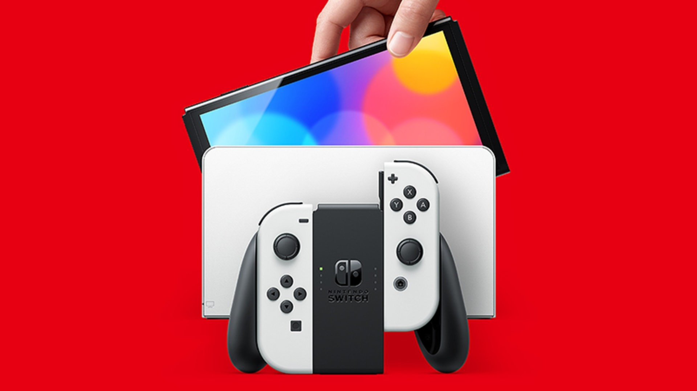

Гайды Файлы
То для чего приставка была прочипована - это возможность установки всей библиотеки игр абсолютно бесплатно.
Использование данных инструкций самый надежный способ не получить програмной ошибки
DBI menu
DBI меню это такая программа, которая появляется в системе Nintendo Wsitch после прошивки. Она нужна для установки игр.
Запуск DBI:
1. Зажать на приставке кнопку R и выбрать папку Альбом
2. Зайти в программу DBI
3. В самой программе нажать Запустить MTP соединение (Run MTP responder) или просто нажать клавишу "X"
4. Приставка попросит подсоеденить ее через кабель

Запуск DBI:
1. Зажать на приставке кнопку R и выбрать папку Альбом
2. Зайти в программу DBI
3. В самой программе нажать Запустить MTP соединение (Run MTP responder) или просто нажать клавишу "X"
4. Приставка попросит подсоеденить ее через кабель
Установка игр
4. Перейти в DBI меню
5. При присоединении приставки проводом через кабель, на компьютере появится еще один носитель информации.
он будет называться "Switch"
6. Далее нужно будет кликнуть на Switch и перейти в "SD Card Install"
Откроется пустая папка , туда просто копировать (или перетягивать) образы игр скаченых заранее.
.jpg)
7. Во время установки на приставке появтся прогресс-бар, по завершению которого высветится сообщение об удачной установке "installation complete"

5. При присоединении приставки проводом через кабель, на компьютере появится еще один носитель информации.
он будет называться "Switch"
6. Далее нужно будет кликнуть на Switch и перейти в "SD Card Install"
Откроется пустая папка , туда просто копировать (или перетягивать) образы игр скаченых заранее.
7. Во время установки на приставке появтся прогресс-бар, по завершению которого высветится сообщение об удачной установке "installation complete"
Где брать игры ?
5. Игры можно найти на сайте
https://love-games1.net
Рекомендую именно его, потому что игры там расположены очень наглядно (чувствуешь себя как в магазине), а также библиотека игр обновляется каждый день.
 Приставка после прошивки, поддерживает все форматы взломаных игр (NSZ, NSP, NS) которые только доступны на торентах, например
Приставка после прошивки, поддерживает все форматы взломаных игр (NSZ, NSP, NS) которые только доступны на торентах, например
5.1. На рутреккер
5.2. Или портале Zona
https://love-games1.net
Рекомендую именно его, потому что игры там расположены очень наглядно (чувствуешь себя как в магазине), а также библиотека игр обновляется каждый день.
Приставка после прошивки, поддерживает все форматы взломаных игр (NSZ, NSP, NS) которые только доступны на торентах, например 5.1. На рутреккер
5.2. Или портале Zona
Установка Retroarch
Ретроарч, это программа, работающая с эмуляторами старых приставок типа Dendy, Sega, PS1, PSP.
При установке retroarch форматы данных приставок будут запускаться без нареканий.
Для установки Retroarch необходимо следовать инструкциям из видео
https://youtu.be/1gpOxLuYaWw?si=xlrvYM37Y2OHNI87
При установке retroarch форматы данных приставок будут запускаться без нареканий.
Для установки Retroarch необходимо следовать инструкциям из видео
https://youtu.be/1gpOxLuYaWw?si=xlrvYM37Y2OHNI87
Перенос сохраниний
Все сохранения хранятся в папке "Saves" эту папку можно найти
подключив Nintendo Switch к компьютеру через DBI меню,
Внутри папки будет несколько папок соответствующие названиям игр
их то и стоит скачать. При переносе сохранений на другую приставку
необходимо чтобы имя аккаунта было таким же. Все должно автоматически
подключиться.
Установка модов
Моды (например DLS или русификаторы) ставятся по разному
однако их не так просто установить по сравнению со взломаной
PS4. Их бесполезно перетягивать в папку "SD Card Install".
Вот один из способов установки:
Чаще всего папку необходимо просто перекинуть в корень самой
"Атмосферы" (в папку SD Card), сама папка с модом будет устроена таким образом,
что автоматически распределит по необходимым системным папкам все файлы.
Умеренный разгон
Разгон в основном нужен для 3D игр, так как это наиболее энергозатратные игры.
Умеренным разгоном можно назвать увеличение частоты памяти на 80% от ее максимальных значений.
А также увеличение частоты видео ядра и процессора на 10%.